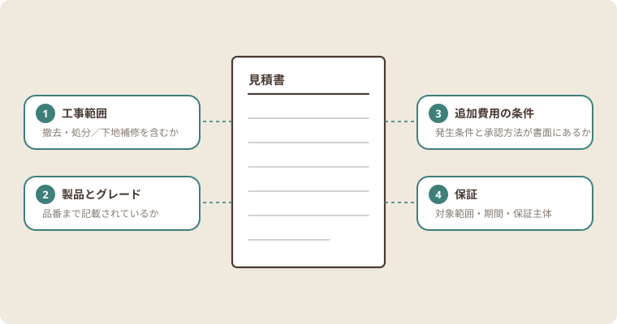

リフォーム前に確認したいこと
リフォームの費用や工事期間は、住まいの状態や施工範囲、選ぶ設備によって変わります。まずは現在の困りごとと、改善したい点を家族で整理しましょう。
この整理をしないまま相談に進むと、各社の提案の前提がそろわず、あとから比較できなくなります。改善したい点に優先順位を付けておくと、提案の違いを判断しやすくなります。
見積もりを比較するときの3つの確認ポイント
金額だけを並べても比較にはなりません。次の3点を同じ条件でそろえると、見積書の差がどこから生まれているのかが見えてきます。
確認ポイント(1) 工事範囲
どこまでを工事に含むかは会社ごとに異なります。既存設備の撤去や処分、下地の補修、内装の復旧が含まれているかを確認してください。範囲が違えば金額が違うのは当然で、安いほうが得とは限りません。
確認ポイント(2) 使用する製品とグレード
同じ設備でもグレードによって価格は変わります。品番まで記載されているかを確認し、記載がない場合は何を前提にした金額かを聞いてください。
確認ポイント(3) 追加費用の条件と保証
工事を始めてから追加が発生する条件と、その承認方法を事前に確認します。あわせて、保証の対象範囲と期間、保証するのが施工会社かメーカーかも見ておきます。

4項目の詳細を見る
1工事範囲撤去・処分／下地補修／内装復旧を含むか
2製品とグレード品番の記載があるか
3追加費用の条件発生条件と承認方法が書面にあるか
4保証対象範囲・期間・保証主体
まとめ
事前に費用の目安と確認項目を知っておくことで、相談や見積もりを落ち着いて進められます。分からない点は契約前に確認しましょう。